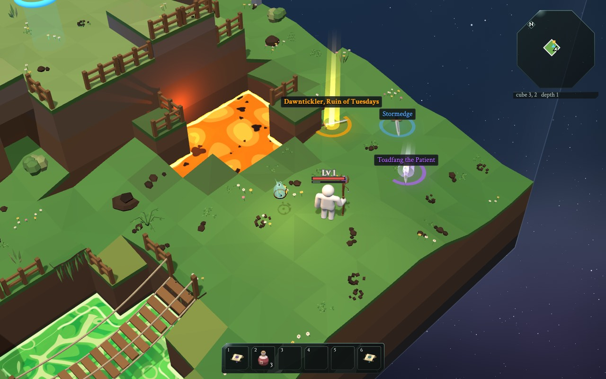
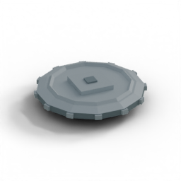
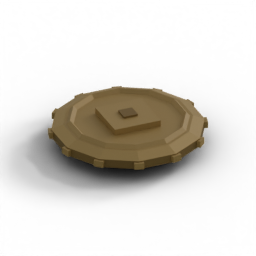

A machine that makes weapons
Eine Maschine, die Waffen baut
Nobody designed the swords, flails, bows, crossbows and staffs you find in The Glass Bird one by one. There is a weapon machine instead.
Niemand hat die Schwerter, Flegel, Bögen, Armbrüste und Stäbe im Glasvogel einzeln entworfen. Stattdessen gibt es eine Waffenmaschine.
Every time a monster drops a weapon, or you open a chest, the machine rolls dice and builds a brand-new one, with its own rarity, powers and name. Like "Grimfang, Eater of Lunches", a Fabled greatsword.
Jedes Mal, wenn ein Monster eine Waffe fallen lässt oder du eine Truhe öffnest, würfelt die Maschine und baut eine brandneue, mit eigener Seltenheit, eigenen Kräften und eigenem Namen. Zum Beispiel "Grimmzahn, Fresser der Pausenbrote", ein sagenhafter Zweihänder.
Its glow on the floor tells you how rare it is: no glow from Crap to Unremarkable, a ring for Decent, a pool of light for Unusual, beams of light for Remarkable and up. And an OMG weapon glows in every colour of the rainbow and hops about.
Sein Leuchten auf dem Boden verrät, wie selten es ist: kein Leuchten von Schrott bis Unauffällig, ein Ring bei Ordentlich, ein Lichtkreis bei Ungewöhnlich, Lichtstrahlen ab Bemerkenswert. Und eine OMG-Waffe leuchtet in allen Farben des Regenbogens und hüpft herum.
Press X in the game to see the names of everything on the floor.
Drück im Spiel X, um die Namen von allem auf dem Boden zu sehen.

Try it: roll a weapon
Probier es: Würfel eine Waffe
This runs the game's real weapon machine. Each roll goes through four steps: rarity, then the kind of weapon, then its magic powers (affixes), then a name. Move the item level up: weapons from deeper down are stronger and rarer.
Hier läuft die echte Waffenmaschine des Spiels. Jeder Wurf geht durch vier Schritte: Seltenheit, dann die Art der Waffe, dann seine magischen Kräfte (Affixe), dann ein Name. Schieb das Gegenstandslevel hoch: Waffen aus tieferen Tiefen sind stärker und seltener.
The rarity ladder
Die Seltenheits-Leiter
| RARITY | SELTENHEIT | WEIGHT | GEWICHT | FROM LEVEL | AB STUFE | AFFIXES | AFFIXE | DAMAGE | SCHADEN |
|---|---|---|---|---|---|---|---|---|---|
| Crap | 11 | 1 | 0 | ×0.75 | |||||
| Shitty | 14 | 1 | 0 | ×0.88 | |||||
| Vanilla | 28 | 1 | 0 | ×1.00 | |||||
| Unremarkable | 14 | 1 | 0 | ×1.03 | |||||
| Decent | 22 | 1 | 1 | ×1.06 | |||||
| Unusual | 8 | 1 | 2 | ×1.11 | |||||
| Remarkable | 2.2 | 4 | 3 | ×1.17 | |||||
| Fabled | 0.42 | 8 | 4 | ×1.24 | |||||
| Impossible | 0.07 | 13 | 4+ | ×1.32 | |||||
| OMG | 0.014 | 17 | 5+ | ×1.40 |
It's the bag of marbles again! 28 cream marbles for Vanilla, but less than half a marble for Fabled.
Das ist wieder der Murmelbeutel! 28 cremefarbene Murmeln für Gewöhnlich, aber nicht mal eine halbe Murmel für Sagenhaft.
Item level is the level of the monster that dropped it (about its depth). Better rarities only appear from a certain level: no Remarkable before level 4.
Die Gegenstandslevel ist das Level des Monsters, das es fallen ließ (ungefähr seine Tiefe). Bessere Seltenheiten gibt es erst ab einem bestimmten Level: nichts Bemerkenswertes vor Level 4.
And the deeper you go, the more the bag tips towards the rare end, slowly. At item level 20, about 8% of swords are Remarkable and 3% Fabled.
Und je tiefer du gehst, desto mehr kippt der Beutel zum seltenen Ende, langsam. Auf Gegenstandslevel 20 sind etwa 8% der Schwerter bemerkenswert und 3% sagenhaft.
Luck tips it further: guardians and chests roll with luck. OMG swords only come from guardians.
Glück kippt ihn noch mehr: Wächter und Truhen würfeln mit Glück. OMG-Schwerter kommen nur von Wächtern.
Try it: how the odds change
Probier es: Wie sich die Chancen ändern
These are the exact chances the game uses. Slide the item level up from 1 to 25, then add luck.
Das sind genau die Chancen, die das Spiel benutzt. Schieb das Gegenstandslevel von 1 bis 25 hoch und gib dann Glück dazu.
The formula: each rarity's weight is multiplied by exp((0.025 × (level − 1) + luck) × rank). "Rank" is 0 for Crap up to 9 for OMG, so the rarest ones grow fastest.
Die Formel: Das Gewicht jeder Seltenheit wird mit exp((0.025 × (Level − 1) + Glück) × Rang) malgenommen. "Rang" ist 0 für Schrott bis 9 für OMG, darum wachsen die seltensten am schnellsten.
Magic powers: affixes
Magische Kräfte: Affixe
An affix is a bonus that changes one number of the weapon. Prefixes go in front of a name, suffixes after it ("Pointy sword of Long Arms"). The game shows them next to what they do:
Ein Affix ist ein Bonus, der eine Zahl der Waffe ändert. Präfixe stehen vor dem Namen, Suffixe dahinter ("Spitzes Schwert der langen Arme"). Das Spiel zeigt sie neben dem, was sie tun:
| AFFIX | DOES | MACHT |
|---|---|---|
| Pointy | + damage | + Schaden |
| Rude | + % damage | + % Schaden |
| Twitchy | faster swings | schnellere Hiebe |
| Swooshy | a wider swing | einen breiteren Hieb |
| Sneaky | more critical hits | mehr kritische Treffer |
| of Long Arms | a longer reach | eine längere Reichweite |
| of Second Helpings | heals you on every hit | heilt dich bei jedem Treffer |
| of the Big Shove | pushes monsters further | schubst Monster weiter weg |
| of Right Where It Hurts | stronger critical hits | stärkere kritische Treffer |
| of Far Away | shots fly further | Schüsse fliegen weiter |
Swooshy and of Long Arms only come on swords, of Far Away only on bows, crossbows and staffs. The four worst rarities, from Crap to Unremarkable, get no affixes at all.
Schwungvoll und "der langen Arme" gibt es nur auf Schwertern, "der Ferne" nur auf Bögen, Armbrüsten und Stäben. Die vier schlechtesten Seltenheiten, von Schrott bis Unauffällig, bekommen gar keine Affixe.
Armor has affixes of its own: Sturdy and Thick (more armor), Blocky (a shield blocks more often), Zippy (boots make you faster), of the Big Breakfast (more health), of Licking Wounds (you heal faster), of the Oven Mitt and of the Iron Stomach (fire and poison hurt less) and of Standing Firm (you get shoved less).
Rüstung hat eigene Affixe: Stabil und Dick (mehr Rüstung), Klotzig (ein Schild blockt öfter), Flitzig (Stiefel machen dich schneller), "des großen Frühstücks" (mehr Gesundheit), "des Wundenleckens" (du heilst schneller), "des Ofenhandschuhs" und "des Eisenmagens" (Feuer und Gift tun weniger weh) und "des festen Stands" (du wirst weniger geschubst).
Tiers
Stufen
Each affix has 7 tiers, like sizes. The item level picks the tier: level 1 to 3 is tier 1, level 19 and up is tier 5. Impossible and OMG weapons reach even higher, up to tier 7.
Jedes Affix hat 7 Stufen, wie Größen. Das Gegenstandslevel wählt die Stufe: Stufe 1 bis 3 ist Stufe 1, ab 19 Stufe 5. Unmögliche und OMG-Waffen kommen noch höher, bis Stufe 7.
Pointy at tier 1 adds 2 to 4 damage. At tier 7, 29 to 38.
Spitz auf Stufe 1 gibt 2 bis 4 Schaden dazu. Auf Stufe 7 sind es 29 bis 38.
Names
Namen
The name is made from word lists too. Crap gets a sad word: "Soggy Long Sword". Unremarkable gets a lukewarm one: "Perfectly Fine Long Sword". Decent gets two words: "Sneaky Nibbler". Fabled gets a made-up word and a title: "Grimfang, Eater of Lunches".
Der Name kommt auch aus Wortlisten. Schrott bekommt ein trauriges Wort: "Matschiges Langschwert". Unauffällig bekommt ein lauwarmes: "Völlig ordentliches Langschwert". Ordentlich bekommt zwei Wörter: "Hinterlistiger Knabberer". Sagenhaft bekommt ein erfundenes Wort und einen Titel: "Grimmzahn, Fresser der Pausenbrote". Auf Deutsch muss das Spiel noch etwas wissen: ob das Wort der, die oder das ist. Danach richtet sich die Endung: matschiger Bogen, matschige Armbrust, matschiges Langschwert.
Who drops what
Wer was fallen lässt
Monsters
Monster
Every monster drops coins. Sometimes a sword (5%), a piece of armor (4%), a health potion (3%) or a crystal for the Enchanter (1.5%). Tougher monsters drop more often: a Stunder a sword 8% of the time.
Jedes Monster lässt Münzen fallen. Manchmal ein Schwert (5%), ein Rüstungsteil (4%), einen Heiltrank (3%) oder einen Kristall für die Verzauberin (1,5%). Stärkere Monster lassen öfter etwas fallen: ein Stunder ein Schwert in 8% der Fälle.
And remember: the same monster always drops the same thing, even if it comes back after you die. Why?
Und denk dran: Dasselbe Monster lässt immer dasselbe fallen, auch wenn es nach deinem Tod wiederkommt. Warum?
Guardians
Wächter
A Guardian always drops a sword (at least Decent), a piece of armor, a potion and a crystal. A Temp Boss (or a real boss) drops two swords, potions and crystals, at least Unusual from level 5. Only they can drop OMG things.
Ein Wächter lässt immer ein Schwert (mindestens ordentlich), ein Rüstungsteil, einen Trank und einen Kristall fallen. Ein Temp-Boss (oder ein echter Boss) lässt zwei Schwerter, Tränke und Kristalle fallen, ab Level 5 mindestens ungewöhnlich. Nur sie können OMG-Sachen fallen lassen.
Treasure chests
Schatztruhen
Every depth has four treasure sites: two basic, one uncommon, one rare. Their chests hold coins, potions, crystals, a sword or two and often armor; the grander the site, the better. Click one to open it!
Jede Tiefe hat vier Schatzplätze: zwei einfache, einen ungewöhnlichen, einen seltenen. Ihre Truhen enthalten Münzen, Tränke, Kristalle, ein oder zwei Schwerter und oft Rüstung; je prächtiger der Platz, desto besser. Klick eine an, um sie zu öffnen!
Coins come to you automatically from three cells away once they land. The action key (F by default) collects coins, potions and crystals from eight cells away. Weapons and armor still wait for a click or the inventory.
Münzen kommen nach dem Landen automatisch aus drei Zellen Entfernung zu dir. Die Aktionstaste (normalerweise F) sammelt Münzen, Tränke und Kristalle aus acht Zellen Entfernung ein. Waffen und Rüstung warten weiter auf einen Klick oder das Inventar.
Coins: 10 copper make 1 silver, 100 silver make 1 gold.


Münzen: 10 Kupfer sind 1 Silber, 100 Silber sind 1 Gold.
The real code: the weapon machine
Der echte Code: die Waffenmaschine
Four lines, four steps. Each step is a function in its own file: rarities.js, bases.js, affixes.js, names.js.
Vier Zeilen, vier Schritte. Jeder Schritt ist eine Funktion in einer eigenen Datei: rarities.js, bases.js, affixes.js, names.js.
opts.favor is the kind of weapon you fight with. rollBase picks that kind three times as often, so you keep finding upgrades for it.
opts.favor ist die Art Waffe, mit der du kämpfst. rollBase wählt diese Art dreimal so oft, damit du immer wieder bessere davon findest.
Pure means: it only uses what you give it. Same dice (rng), same weapon. That makes it easy to test, and to show in this guide!
Rein (pure) heißt: Sie benutzt nur, was du ihr gibst. Gleiche Würfel (rng), gleiche Waffe. Das macht sie leicht zu testen und hier im Rundgang zu zeigen!
The sword is saved as what it rolled, not how strong it is. Its damage is worked out when needed (itemStats in stats.js). So if the makers re-balance swords later, the ones you already have change with them.
Das Schwert wird gespeichert als das, was es gewürfelt hat, nicht wie stark es ist. Sein Schaden wird erst ausgerechnet, wenn man ihn braucht (itemStats in stats.js). Wenn die Macher Schwerter später neu einstellen, ändern sich die, die du schon hast, also mit.
The real code: how strong is it?
Der echte Code: Wie stark ist es?
The damage, step by step, for an Unusual Long Sword, item level 11, with "Pointy +5":
Der Schaden Schritt für Schritt, für ein ungewöhnliches Langschwert, Gegenstandslevel 11, mit "Spitz +5":
- base: 39
- Grundwert: 39
- item level: × (1 + 0.05 × 10) = × 1.5 → 58.5
- Gegenstandslevel: × (1 + 0,05 × 10) = × 1,5 → 58,5
- rarity Unusual: × 1.11 → 64.935
- Seltenheit Ungewöhnlich: × 1,11 → 64,935
- Pointy: + 5 → 69.935
- Spitz: + 5 → 69,935
- no Rude: × 1 → rounded: 70
- kein Grob: × 1 → gerundet: 70
Then in a fight, your own level adds 2% per level.
Im Kampf gibt dann noch dein eigenes Level 2% pro Level dazu.